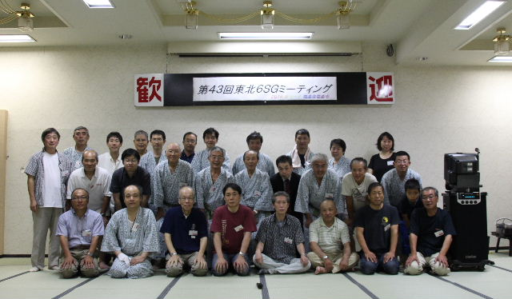

|
◎ 第43回東北6m SSB Group Meeting in 福島 (06-07.Sep.2014)
第43回東北6SGミーティング・福島大会は、去る9月6〜7日の両日、福島県福島市の穴原温泉「いずみや」で開催されました。
福島県での開催は平成19年（2007年）9月に福島県相馬市で開催されて以来、7年ぶりでした。
翌7日(日)の講演は9:00時から、JA1RJU(小笠原)局による「6m雑感」と題して、サイクル24でのコンデションの状況と、今後の見通しなどの報告がありました。

[第43回 東北6SG・福島大会参加局]
JA1RJU/JA7JU(東京) JN1JFC(茨城) JA7AHK(宮城) JA7QVI(宮城) JH7WER(宮城) JI7WTK(青森)
JA1VOK(千葉) JO1KBC(東京) JA7MIT(宮城) JA7WSZ(福島) JE7CAI(青森) JK7IKU(秋田)
JF1UMK(千葉) JO1PSX(千葉) JA7JWF(宮城) JH7DHS(福島) JF7ELG(千葉) JA8CRB/7(山形)
JL1PND(東京) JR2HCB(愛知) JA7OWD(福島) JH7MQU(福島) JF7GDN ＆ XYL
7L4KVO(東京) JA7AQL(秋田) JA7QIK(宮城) JH7VTE(秋田） JG7BBO(青森)
|
◎ 第43回東北6m SSB Group Meeting in 福島ご案内
*********************************************************************************
●ミーティング会場変更のお知らせ (2014.08.16)●
-------------------------------------------------------
◎ 予定しておりました飯坂温泉のプラザホテル吾妻より連絡がありましてホテル業
を廃業することが決定し急遽お隣の温泉郷であります「穴原温泉いづみや」にやむ
なく変更することとなりました。
【穴原温泉 いづみや】
福島県福島市飯坂町湯野字湯尻１５
TEL 024-542-5167
（東北自動車道・福島飯坂IC→国道13号→県道5号→県道319号＝約10分）
詳細はホテルの公式ホームページをご覧ください
|